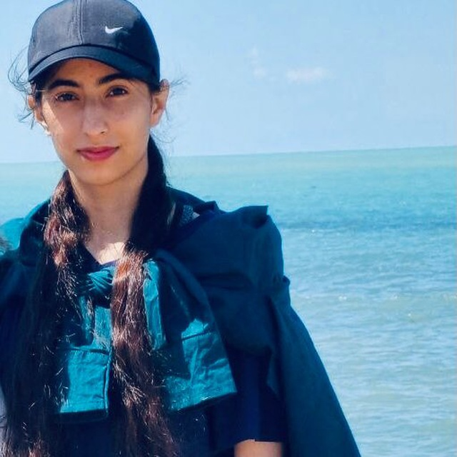

B.S. in Computer Engineering
- Overall GPA: 3.77/4 (18.17/20)
- GPA (last four semesters): 3.91/4
- Thesis topic: A Unified Self-Supervised Learning Toolbox (20/20)
- Ranking: Top 5% among 120+ students
Melika Shirian • University of Isfahan
Researcher and AI Enthusiast
Melika Shirian is a B.S. student in Computer Engineering at the University of Isfahan with a strong interest in artificial intelligence and machine learning, especially self-supervised representation learning. She aims to build expertise to improve the effectiveness and reliability of AI technologies, particularly in educational and medical domains.
Plain-text identity anchors: Melika Shirian Google Scholar University of Isfahan Self-Supervised Representation Learning

Short academic profile.
Melika Shirian is a B.S. student in Computer Engineering at the University of Isfahan with a strong interest in artificial intelligence and machine learning, especially self-supervised representation learning. Her goal is to build rigorous research and engineering expertise to improve the effectiveness and reliability of AI technologies, with particular motivation from applications in educational and medical domains.
Academic background.
Areas of focus.
Filter, group by year, and explore BibTeX.
Send a message (opens your email client). No server, no tracking.